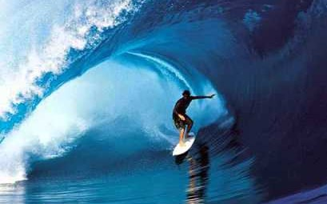

About my 'hobby'
First things first I'm going to tell you about what longboarding is and why it's so awesome to do.
Longboarding is the act of riding on a Longboard. Longboarding also has competitive races down hill, with some riders reaching speeds exceeding 50 miles per hour. A longboard varies in shape and size unlike its set counterpart, the skateboard, and has more stability, traction and durability due to larger wheel size and lower wheel durometers. Many, but not all longboards, use trucks (axles) that contain different geometric parameters than a skateboard as well. These factors and their variation have given way to a variety of disciplines, functions and purposes for a longboard. The angles at which some longboards can turn, as well as their ability to coast long distances make them more suitable for cruising, and commuting, on streets than regular skateboards.
A little bit about the history of longboarding
The life of longboarding started in approximately the 1950s. The idea of longboarding originated from surfers in Hawaii that wanted to take their surfing hobby to land when the waves were too small to surf. Surfers then figured out a way of achieving their goal of bringing surfing to land by customizing their skateboards. They would grab a piece of thick plywood and shape it into a smaller version of a surfboard, then screw the trucks and wheels to the decks and head out to small hills to imitate the same moves they would do if they were out surfing.
During the 1970s, a small group of longboarders honed their techniques. Some of the more notable longboarders from this period, such as Tom Sims and Brad Stradlund were profiled in a 1978 SkateBoarder magazine article entitled Cult of the Longboard. These pioneers saw longboarding as a form of self-expression, and were influenced by surfing. However, despite the advent of polyurethane wheels (affectionately referred to as "thane" by longboarders), longboarding did not reach a high degree of prevalence during the 1970s.
Longboards lived on as an underground sport with home hobbyists continuing to make boards in their garages or strap trucks onto snowboard decks using old Kryptonic wheels from the 70's or roller skating wheels.
In the early 1990s, Sector 9 started mass-producing and selling longboards. The 1990s also saw a change in truck technology: reverse kingpins made longboarding more stable.
The Internet has made it possible for small groups of skateboarders to communicate with each other and also gain an audience they might not have had locally, allowing the sport to grow further.[citation needed] Multiple subbranches of longboarding exist with relatively small but hardcore groups of adherents like slalom, LDP (long distance pushing/pumping), downhill, dance, freeriding, technical hardwheel sliding and more.